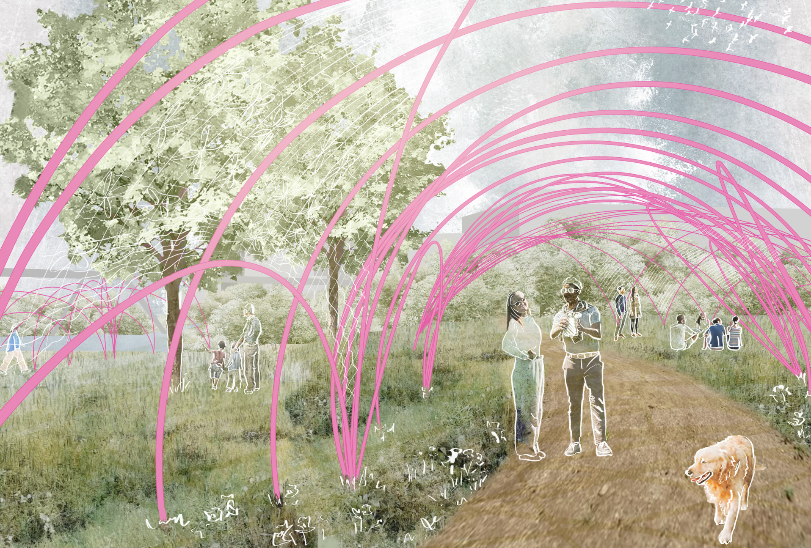
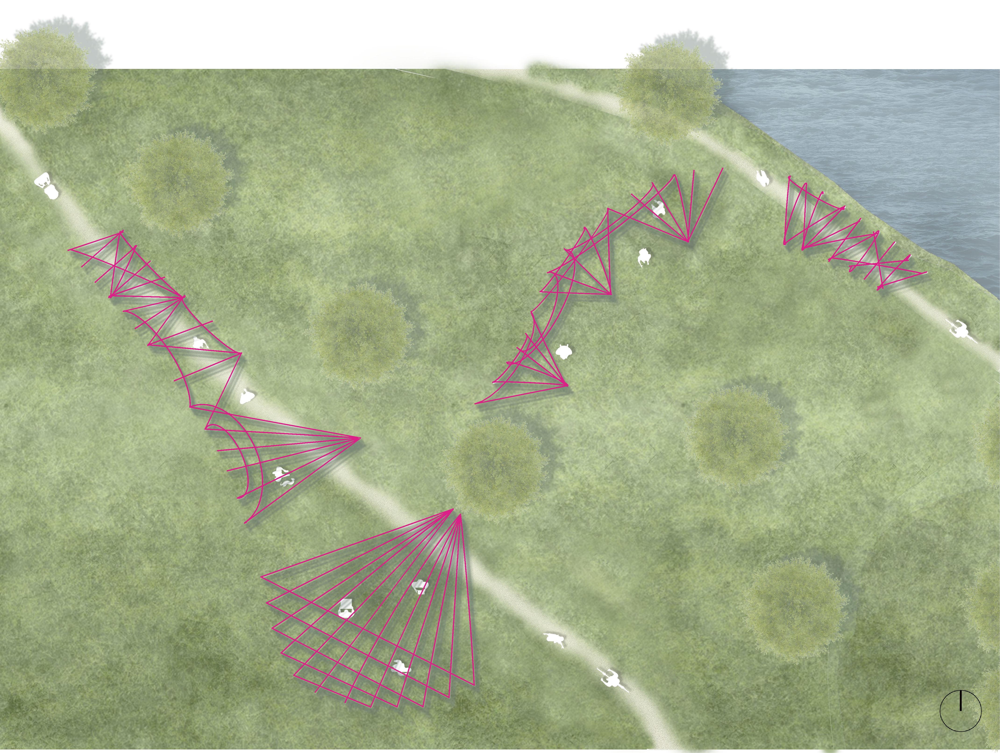
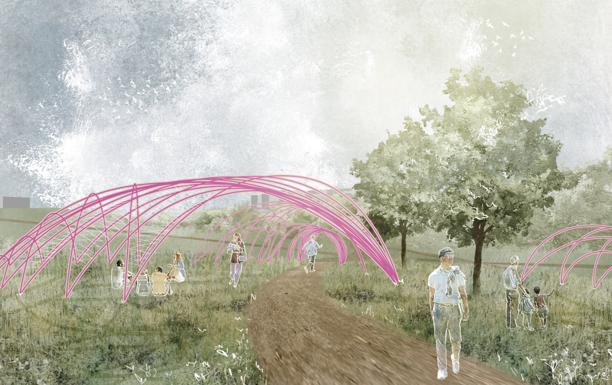
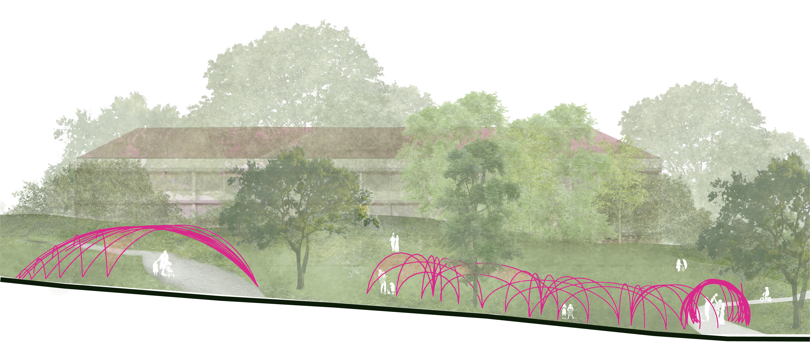
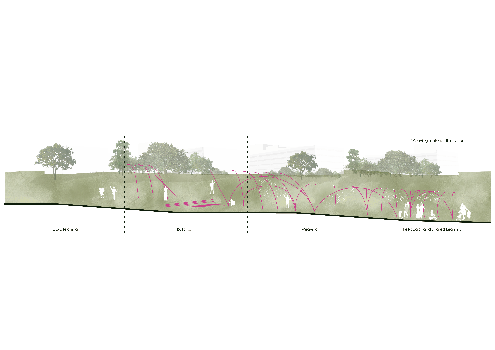
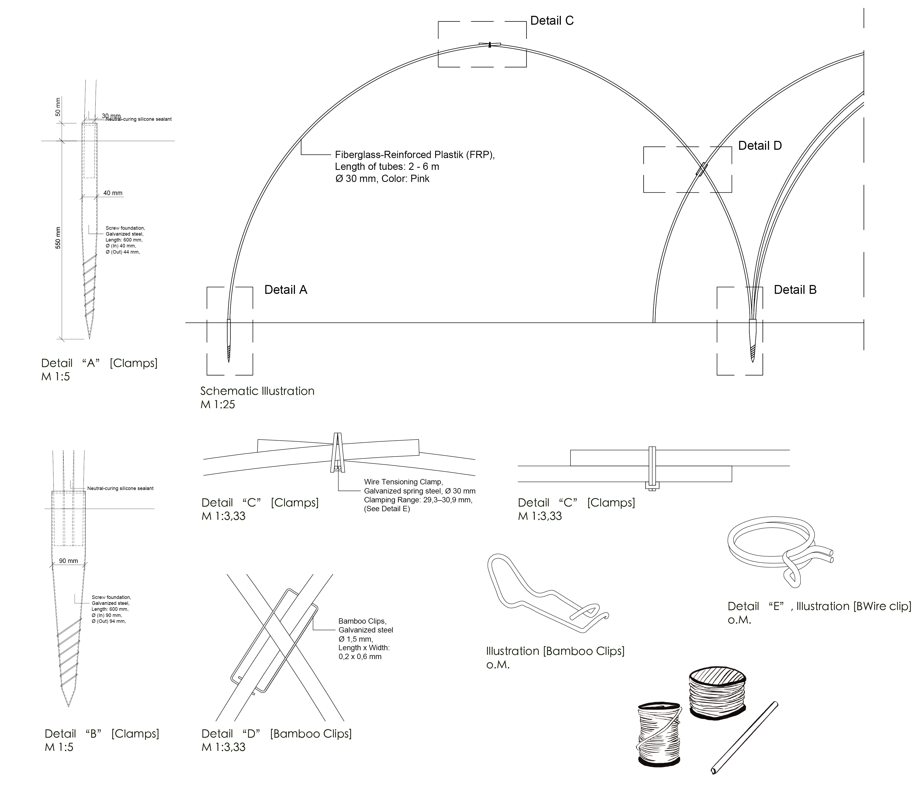
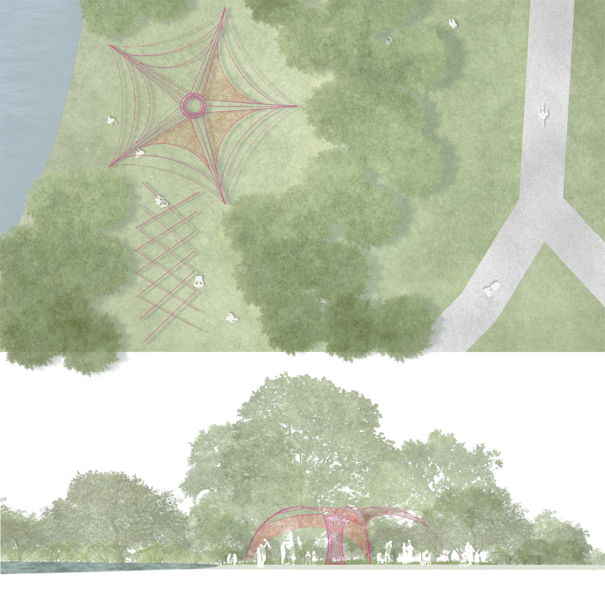
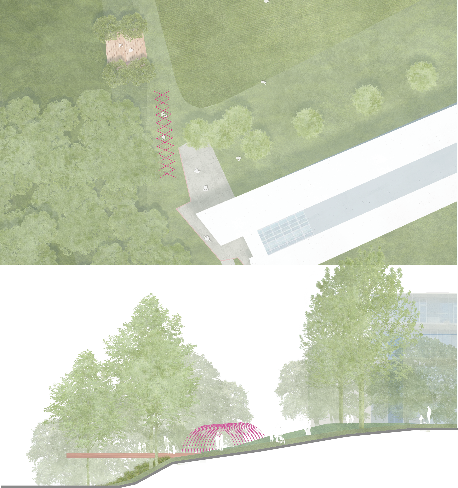

Project 01 / Academic
Campus
Campus
Acupuncture
A network of precise, lightweight interventions that activates overlooked campus spaces through participation, ecological care and continuous feedback.
- Location
- Munich, Germany
- Institution
- TUM Landscape Architecture
- Year
- 2026
- Type
- Research by Design
- Role
- Design · Visualization

Small interventions. Systemic effects.
Instead of transforming the campus through one large object, the project identifies strategic spatial nodes and introduces limited but precisely positioned interventions.
Borrowing from acupuncture, each node operates as a catalyst. Co-design, building, use, feedback and shared learning form one continuous process rather than separate phases.






